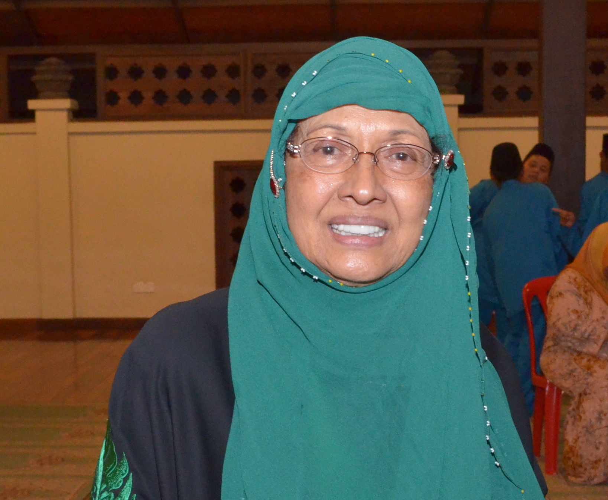
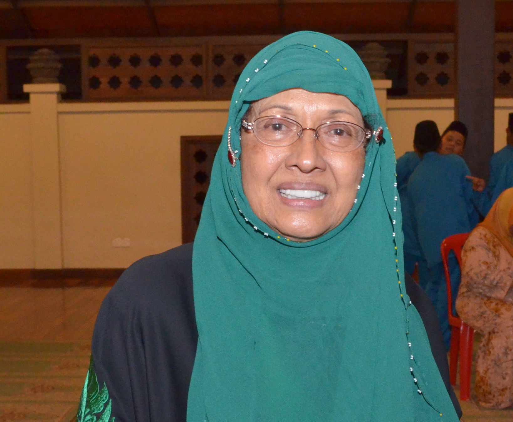

History
On August 16, 1966, Rumah Bakti was established and successfully registered with “Pertubuhan Pendidikan Anak-anak Yatim Selangor” under the Registration Number ARS/Sel/50/66 through the efforts of a group of social activists and Selangor State Government senior officer.
 
Since then, the appointed committee members have been actively working in order to achieve the purpose of the establishment. Upon the contribution by Y.Bhg Allahyarham Dato' Haji Harun and wife Y.Bhg Datin Salmah Suleiman, the Selangor State Government has granted land in Hulu Kelang district.
From the result of their hard work, several programs have been held such as Dinner Gathering, Gala Premiere, as well as pleading to the committee members, the organization managed to build a Rumah Bakti building efficacious at the cost of RM158,107.81. DYMM Almarhum Sultan Salahuddin Abdul Aziz Shah Alhaj ibni Almarhum Sultan Hisamuddin Alam Shah, the Sultan of Selangor has given royal approval to become the Rumah Bakti Hulu Kelang patron. Also, with the contribution of the Selangor State Government and donations from the public, the development of dormitories, prayer areas, new Library, computer room and other facilities has developed.
Logo
Rumah Bakti Hulu Kelang
(Old Logo)
 Rumah Bakti Dato' Harun
Rumah Bakti Dato' Harun
(New Logo)
In remembrance of the contribution by Y.Bhg Allayarham Dato’ Haji Harun Idris, the members of Pertubuhan Pendidikan Anak-anak Yatim Selangor have agreed to change the name from Rumah Bakti Hulu Kelang (RBHK) to Rumah Bakti Dato’ Harun (RBDH). Along with that, the logo of Rumah Bakti has been transformed and thus the amendment was approved by the Registrar of Society on 29 July 2011.
Meaning of the new logo:
- Protect an orphans to be faithful, grateful and responsible - Brave and visionary - Children grow up with guidance and excellent academic performance - Disciplined - Sincerity and cleanliness